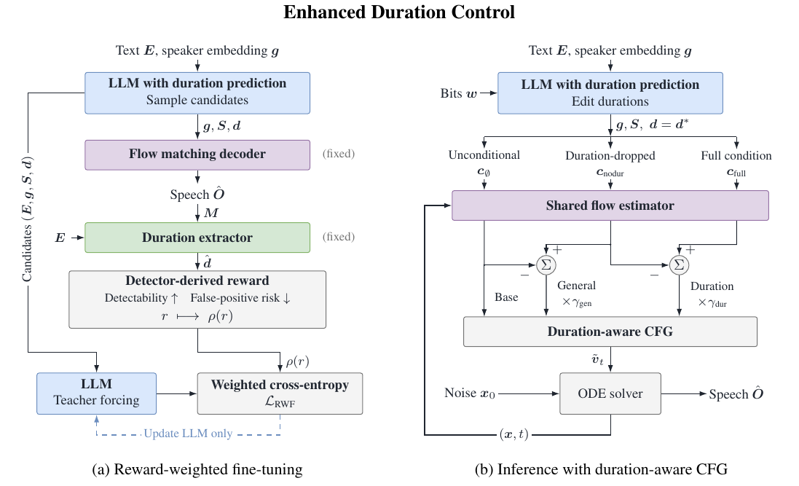

DuraMark-Basic
Basic duration controlUses duration prediction, duration-controllable synthesis, and duration extraction. It omits reward-weighted fine-tuning and duration-aware CFG.
Syllable duration · Speech watermarking
DuraMark embeds watermark bits in syllable durations during speech synthesis. A duration extractor recovers these durations for watermark detection and information extraction.
The framework
Uses duration prediction, duration-controllable synthesis, and duration extraction. It omits reward-weighted fine-tuning and duration-aware CFG.
Adds reward-weighted fine-tuning (RWF) of the LLM and duration-aware classifier-free guidance (CFG) at inference to improve duration control and watermark accuracy.

Listen
Synthesized speech with 8-bit watermark messages.